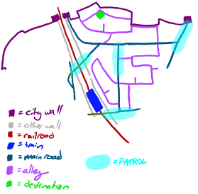

Aster is my Senior Capstone project at the University of Rochester. I am the Project Manager, Creative Director, Artist, Level Designer, Game Writer, Technical Writer, and Character Modeler on the Aster team (and various other positions as needed). The game is built in Unreal Engine. Some art can be found here.
Programs/Skills:
- Maya 2015, Sculptris
- GIMP, Paint Tool SAI
- Project Management
- Technical writing
- Game writing
- Concept art
- Level design
- Pitching, presenting
Aster is a stealth game about rescuing refugees from war-torn cities. I developed the idea for the game while studying abroad in Singapore. Initially, it was to be a puzzle game in which the player drew arrows during the day, marking an escape route; at night, the avatar would automatically follow the route. If the route didn't lead out of the city the player could attempt the puzzle again.
Though the project was initially conceived on my own time, I developed it further as a final project for one of my classes in Singapore (History of Games) and as a proposal for my Senior Capstone project. At the beginning of my senior year, Fall 2015, I pitched it again to my fellow seniors. I was able to convince three others to join me in making my idea a reality.
Original Design Document (Spring 2015) | Modified Document (Fall 2015)
The game, now a collaborative effort, went through significant changes from my initial concept. We switched from 2D to 3D early on, as our developer was only familiar with Unreal Engine and its 3D capabilities. In the interest of splitting the work more evenly, I didn't get to work in-engine at all for the project; instead, I wrote the design document, designed the characters, and wrote the script. I also designed the layout of each city, and modeled several characters in 3D using Sculptris and Maya, though we ended up not using them.
As the one who came up with the idea, I was technically the team lead. However, as it was a collaborative project and we all had our own goals for the game, I did not actually have the authority to veto ideas or tell my teammates what to do. With only a minimal semblance of structure, the team ended up disorganized, and the game suffered, particularly in scope. Of the initial seven cities planned (each was a level, but could be returned to for additional puzzles), we built only four. Additionally, many mechanics, such as placing arrows, which was the mechanic the game was based from, never made it into the game at all.
Overall, Aster was a good learning experience. While the product was not what I had hoped for, the process of making it still taught us valuable lessons about the principles of game design, particularly the importance of mechanics and story in the creation of an engaging experience, and of course minding scope and feature creep. Had I more time, and more authority, I would have made sure the game had a strong mechanical foundation, and made sure the script was more rigorously implemented (or included at all).
As it is, I hope to return to the idea sometime soon and build something closer to my own conception of the concept, using what I have learned to both improve on my ideas and implement them the way I want to.